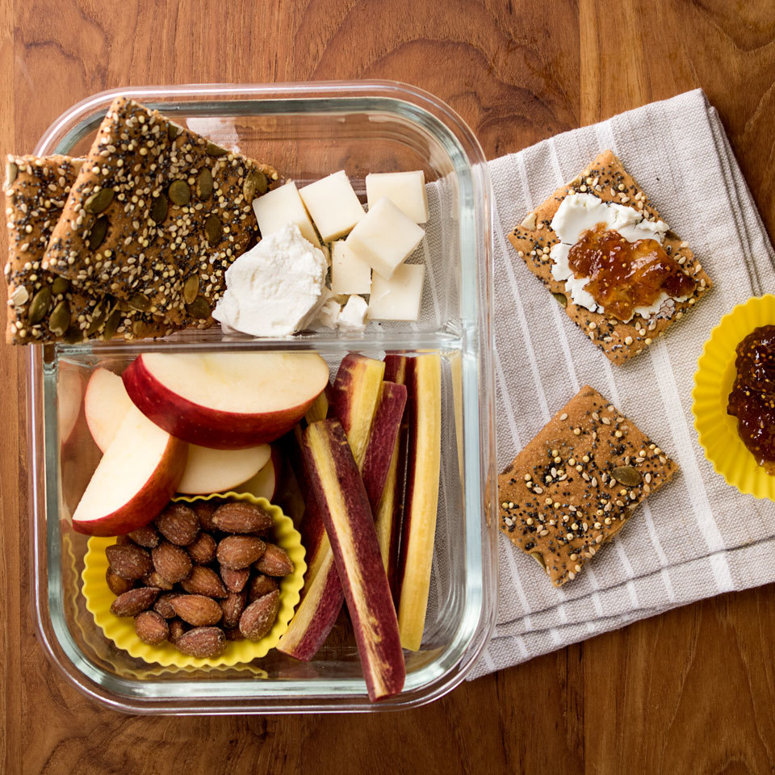

Fruit & Cheese Bistro Lunch Box

This fruit, cheese and cracker box inspired by Starbucks' bistro boxes is a fun and healthy alternative to your standard sandwich. It's the perfect personal-size cheese plate to pack for a work lunch or a picnic in the park.
- 2 or 3 whole-grain crispbreads or 6 whole-grain crackers
- 1 ounce Cheddar cheese, cubed or sliced
- 1 ounce goat cheese
- ¼ cup smoked almonds
- ½ apple, sliced
- 1 tablespoon fig jam
- ½ large carrot, peeled and cut into 4-inch sticks
- Arrange crispbreads (or crackers), Cheddar, goat cheese, almonds, apple, jam and carrot sticks in a 4-cup divided sealable container. (If needed, the almonds and jam can be kept separate by placing them in silicone baking cups before arranging.) Keep refrigerated until ready to eat.